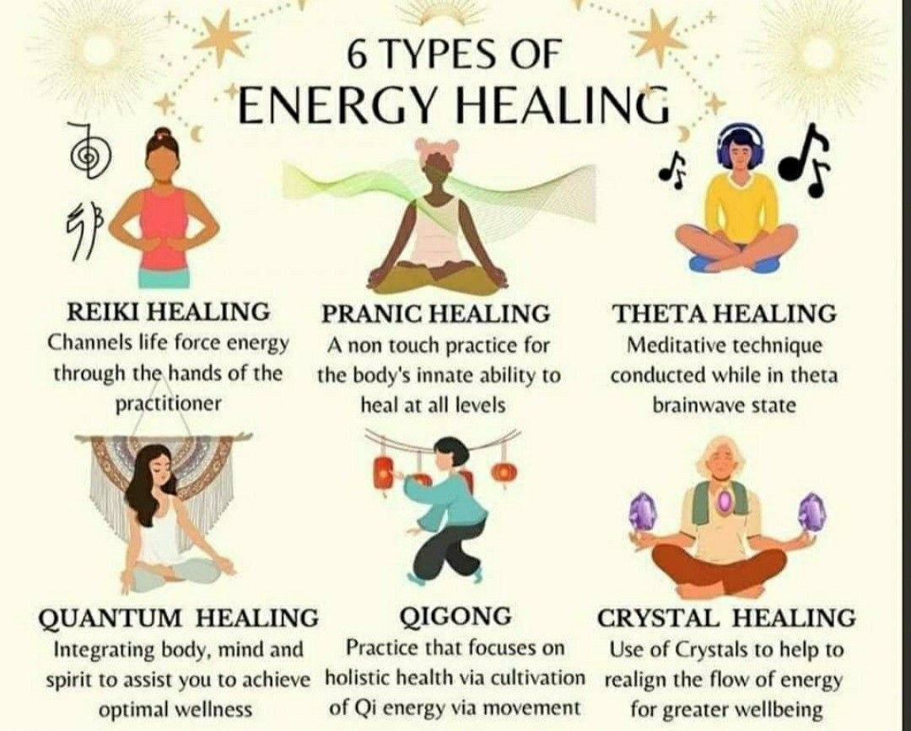
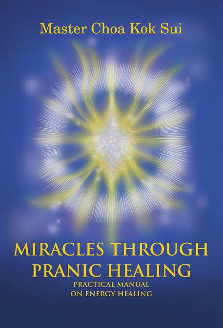

Overview of Pranic healing
History Pranic healing, a form of energy healing, was developed by Master Choa Kok Sui in the 1980s. Based on the principle of manipulating life energy (prana) to promote physical, emotional, and non-invasive healing method, making it suitable for those who prefer alternative therapies that do not involve medication or physical manipulation.

The different types of Pranic healing
TYPES OF PRANIC HEALING
Basic Pranic Healing:
Energy Anatomy: Basic Pranic Healing teaches the principles of energy anatomy, including the chakras (energy centers) and the energy meridians that run through the body.
Cleansing: Pranic healers learn how to scan the energy field for energy blockages or imbalances and then systematically remove these diseased or congested energies.
Energizing: After cleansing, fresh and vital energy (prana) is channeled and projected into the affected areas to accelerate the body’s natural healing processes.
Conditions Treated: Basic Pranic Healing is effective for various physical ailments, such as headaches, minor injuries, and common illnesses.
Advanced Pranic Healing:
Specialized Techniques: Advanced Pranic Healing introduces more advanced techniques and specific protocols for different health conditions.
Color Pranas: Practitioners learn to use different colors of prana to target specific ailments, as each color has unique healing properties.
Sacred Geometry: The application of sacred geometry and certain symbols is used to enhance the healing process.
Conditions Treated: Advanced Pranic Healing is particularly effective for serious illnesses, chronic diseases, and conditions that require more specialized attention.
Pranic Psychotherapy:
Emotional and Psychological Healing: Pranic Psychotherapy focuses on healing emotional and psychological issues.
Negative Emotions: Techniques are used to disintegrate negative thought forms, emotions, and psychological patterns stored in the energy body.
Conditions Treated: This type of Pranic Healing is beneficial for individuals dealing with stress, anxiety, trauma, depression, and other emotional challenges.
Pranic Crystal Healing:
Crystal Selection: Specific crystals are chosen based on their properties and the energy centers they target.
Crystal Activation: These crystals are then energetically cleansed, charged, and programmed to enhance the healing process.
Conditions Treated: Pranic Crystal Healing can be used to amplify the effects of healing for various conditions and energy imbalances.
Pranic Psychic Self-Defense:
Psychic Attacks: This type of Pranic Healing is designed to protect individuals from negative psychic and energetic influences.
Energy Shields: Techniques involve creating energetic shields and fortifying the aura to prevent unwanted energetic intrusions.
Conditions Treated: Pranic Psychic Self-Defense helps individuals maintain their energetic well-being and protects them from negative psychic influences.
Superbrain Yoga:
Physical and Energetic Integration: Superbrain Yoga combines specific physical exercises with energy work to balance and integrate the left and right brain hemispheres.
Benefits: It is believed to enhance cognitive function, improve memory, and promote emotional stability by harmonizing the brain’s energy.
Pranic Feng Shui:
Energy in Spaces: Pranic Feng Shui applies Pranic principles to spaces, assessing the energy flow in homes and workplaces.
Improving Energy: Practitioners use Pranic Healing techniques to enhance the energy balance within the environment, which can lead to improved health, prosperity, and well-being.
Kriyashakti:
Goal Manifestation: Kriyashakti combines energy techniques with practical exercises to help individuals materialize their goals and attract abundance.
Techniques: This includes powerful visualizations, affirmations, and energy practices to create a conducive environment for success.
These detailed descriptions provide a deeper understanding of each type of Pranic Healing and its specific applications for physical, emotional, and psychological well-being, as well as for enhancing one’s living spaces and manifesting personal goals.

The benefits of Pranic healing
Pranic Healing is an alternative energy healing system developed by Master Choa Kok Sui, which aims to promote physical, emotional, and mental well-being by balancing and harmonizing the body’s energy, or “prana.” While its effectiveness and scientific validity are subject to debate and further research, some proponents and practitioners claim several potential benefits associated with Pranic Healing:
- Pain Relief: Pranic Healing is believed to help alleviate physical pain and discomfort by clearing energy blockages, which may contribute to various physical ailments.
- Stress Reduction: Practitioners claim that Pranic Healing can reduce stress and promote relaxation, which may improve mental and emotional well-being.
- Improved Energy Levels: The practice is said to enhance energy levels and vitality by cleansing and revitalizing the body’s energy systems.
- Emotional Healing: Pranic Healing may help in releasing emotional traumas and negative thought patterns, leading to emotional well-being and a more positive outlook on life.
- Enhanced Clarity and Focus: Some individuals report improved mental clarity and focus after receiving Pranic Healing sessions.
- Faster Recovery: It is believed that Pranic Healing can speed up the body’s natural healing processes by optimizing the flow of vital energy.
- Enhanced Immune Function: Advocates suggest that Pranic Healing can support the immune system, making the body more resilient to illness.
- Improved Relationships: By addressing emotional and mental imbalances, Pranic Healing might help individuals improve their relationships with others.
- Holistic Approach: Pranic Healing is considered a holistic healing system that addresses the underlying energetic imbalances that can contribute to physical and psychological issues.
- Non-Invasive: It is a non-touch and non-invasive healing method, making it suitable for those who prefer alternative therapies that do not involve medication or physical manipulation.
How to find a Pranic healing practitioner
To find a Pranic healing practitioner, you can follow these steps:
- Pranic Healing Official Website: Visit the official website of Pranic Healing and navigate to the “Find a Practitioner” or “Directory” section. They often provide a search feature where you can enter your location or preferred criteria to find certified practitioners in your area.
- Local Pranic Healing Centers: Check if there are any local Pranic Healing centers or institutes in your area. These centers usually have a list of certified practitioners associated with them. You can contact them directly or visit their websites to find practitioners near you.
- Pranic Healing Associations: Look for Pranic Healing associations or organizations in your country or region. These associations often maintain directories of certified practitioners. They may have online directories or provide contact information to help you connect with practitioners.
- Referrals and Recommendations: Seek recommendations from friends, family, or acquaintances who have experience with Pranic healing. They may be able to refer you to a trusted practitioner they have worked with or know personally.
- Online Directories and Platforms: Explore online directories and platforms that specialize in alternative healing practices. Websites like Healing Clouds (https://www.healingclouds.com/) or Energy Healing Exchange (https://www.energyhealingexchange.com/) may have listings of Pranic healing practitioners along with reviews and ratings from previous clients.
- Social Media and Online Communities: Engage with Pranic healing communities on social media platforms like Facebook, LinkedIn, or forums dedicated to energy healing. These communities often have members who are practitioners or can provide recommendations based on their experiences.
When searching for a Pranic healing practitioner, it’s important to verify their credentials and certifications. Look for practitioners who have completed official Pranic Healing courses and are recognized by reputable Pranic Healing organizations. Additionally, consider factors such as experience, testimonials, and compatibility with your needs and preferences. Always feel free to reach out to the practitioner directly to inquire about their services, approach, and availability. This will help you make an informed decision and find a practitioner who resonates with you.
Frequently asked questions about Pranic healing
Commonly asked questions about Pranic healing often revolve around its principles, practice, and efficacy. Some of these frequently asked questions include:
- What is Pranic Healing? - Encompassing energy healing techniques, it involves cleansing, energizing, and balancing the body’s energy to promote well-being.
- How does Pranic Healing work? - It operates on the principle that the body has an energy field and disturbances or blockages in this field lead to physical and psychological ailments. Pranic healers work to manipulate this energy for healing.
- Is Pranic Healing safe? - Practitioners claim that it’s non-invasive and generally safe.
- What conditions can Pranic Healing address? - Advocates suggest it can help with various physical, emotional, and mental health issues, from chronic pain to stress, anxiety, and more.
- Can Pranic Healing be learned and practiced by anyone? - Yes, it’s believed that with proper training and practice, individuals can learn the techniques and apply them for healing purposes.
- Is there any scientific evidence supporting Pranic Healing? - Scientific research validating its effectiveness is limited, but anecdotal evidence and some small-scale studies exist. The empirical basis remains a topic of discussion.
- How long does it take for Pranic Healing to show results? - This varies widely based on individual conditions, their severity, and the body’s response. Some report immediate relief, while others require multiple sessions.
- Do I need to believe in Pranic Healing for it to work? - Advocates say that belief is not a requirement for it to be effective; the energy work can still have an impact.
Blog: Articles about Pranic healing
Contact form
To get in touch, you can reach out to Aditi Rao at definitelynotaditi@gmail.com.